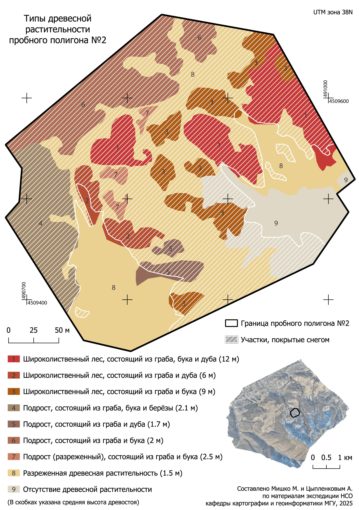
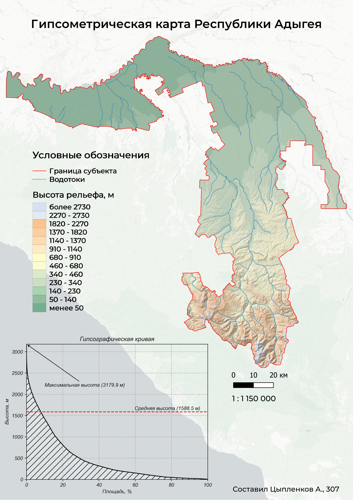

My Portfolio
This section highlights a selection of projects I have undertaken, both independently and as part of some ✨team✨. Since most of these projects were completed as part of my academic coursework, they are primarily documented in Russian.
Cartography
Denmark Population Map

The goal of this project was to create two pages for the "Population" section of a national atlas, focusing on a country of my choice. My concept involved presenting a combination of spatial data, visualized at the municipality level, alongside complementary statistical insights, such as population pyramids and histograms. This approach aimed to provide a comprehensive and visually engaging representation of demographic information.
Used software: QGIS (data processing, maps, layout) + matplotlib (graphs);
Role: Author
Vernacular Districts of Tver

For this task, we needed to map the vernacular districts of a chosen city. First, let’s explain the main idea. Vernacular districts are informal areas of a city, shaped by the people who live there through their everyday lives. These districts don’t follow official boundaries, and their names and locations are based on how people see and experience the city. As mentioned earlier, we had to pick a city to map its vernacular districts. I chose the city of Tver (Tver Oblast, Russia). All the data were obtained by interviewing local residents.
Used software: QGIS (data processing, maps and layout);
Role: Author
Vegetation types (Dilijan, Armenia)

Landscape Map (Pustozersk, Russia)

The task was to map vegetation associations based on field surveys (that included UAV surveys and field researches).
Used software: QGIS (data processing, map) + Adobe Illustrator (layout);
Role: Co-Author
Hypsometry Map of Rep. Adygea

The task was to map topography of a particular Russia region (Rep. of Adygea). Data for hypsometric curve (bottom left) was derived from DEM using WBT and then post-processed and visualized with Python packages.
Used software: QGIS (data processing, map) + WhiteBoxTools, matplotlib (hypsometric curve) Adobe Illustrator (layout);
Role: Author
Web mapping
Literature Map of Moscow
This project features a web-based map showcasing key locations in Moscow associated with classical Russian literature. The map serves as a visual guide to the city's literary heritage, highlighting places connected to renowned authors and their works.
Used software: R + JavaScript (Leaflet)
Role: Author